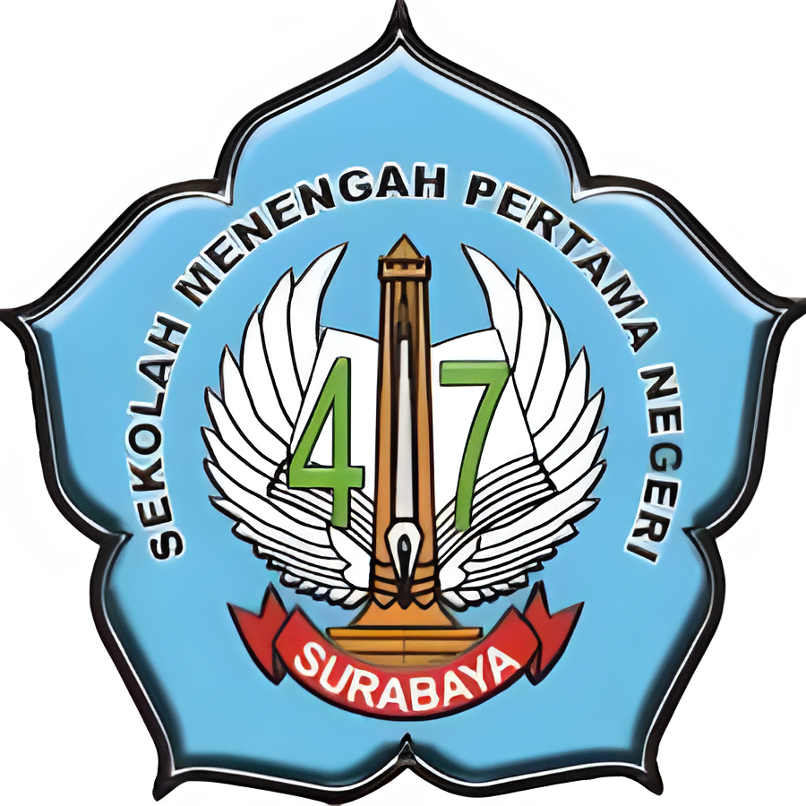
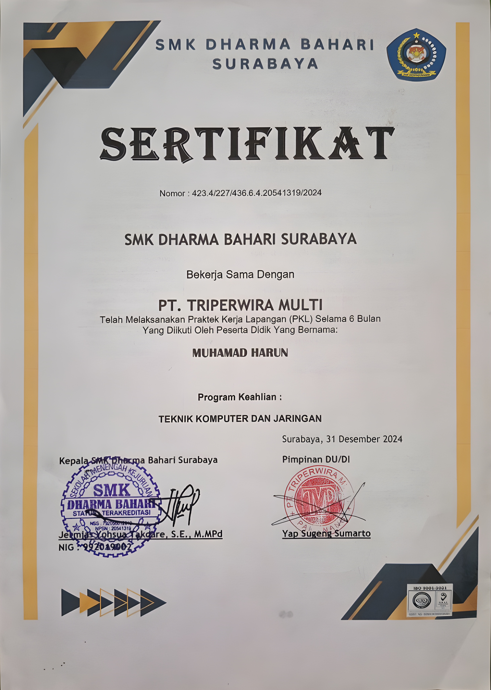

Halo, Saya
Muhamad Harun
Saya adalah seorang lulusan jurusan TKJ sekaligus Junior Front-End Developer yang bersemangat menciptakan pengalaman digital yang menarik dan interaktif.
Saya adalah seorang lulusan jurusan TKJ sekaligus Junior Front-End Developer yang bersemangat menciptakan pengalaman digital yang menarik dan interaktif.
Halo, Saya Muhamad Harun Saya adalah seorang lulusan Teknik Komputer dan Jaringan yang percaya bahwa belajar bisa dilakukan di mana saja.
Perjalanan karier saya dimulai dari dunia teknis di sekolah, hingga menjelajahi dinamika Industri Logistik, F&B dan Ritel.
Dari gudang logistik, saya belajar tentang ketelitian. Dari industri F&B, saya belajar tentang pelayanan dan kerjasama tim. Saya siap membawa kombinasi keterampilan teknis dan pengalaman operasional ini untuk memberikan kontribusi nyata bagi tim Anda.

Jurusan Teknik Komputer dan Jaringan (TKJ)
_
Mengelola pencatatan data barang masuk dan keluar secara akurat menggunakan sistem input data, serta melakukan pengelompokan produk berdasarkan kategori untuk mempercepat proses searching.
Mendukung koordinasi antara area dapur dan area saji untuk memastikan pesanan disiapkan dengan standar kualitas yang konsisten dan disajikan tepat waktu.
Membantu pemeliharaan database situs web internal perusahaan serta menangani kebutuhan teknis harian karyawan terkait jaringan, server lokal, serta kendala sistem operasi komputer.

Tertarik untuk bekerja sama atau sekadar menyapa? Jangan ragu untuk menghubungi saya melalui media sosial dibawah ini.